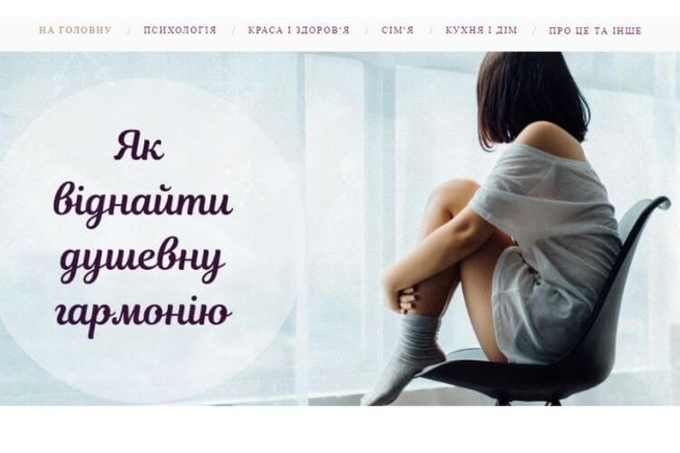
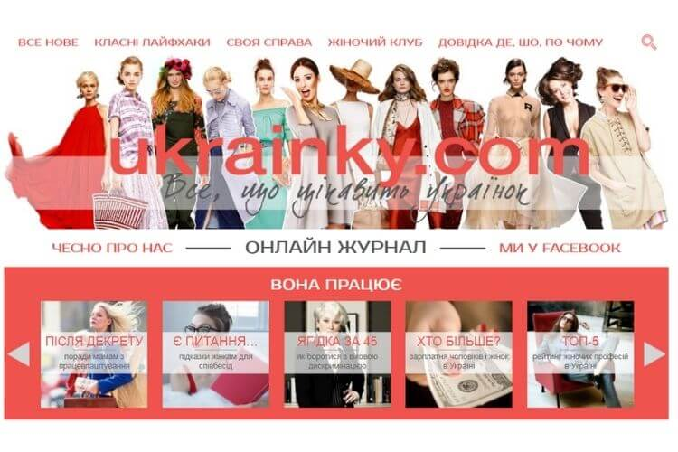
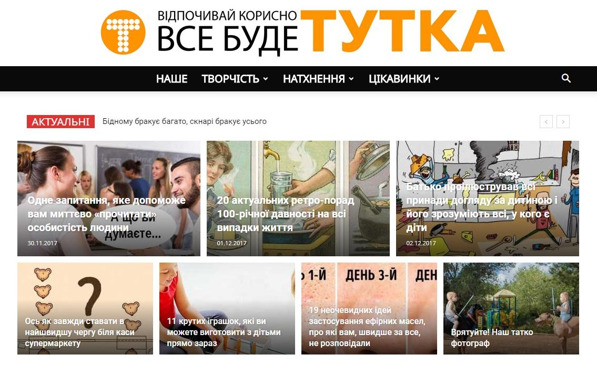
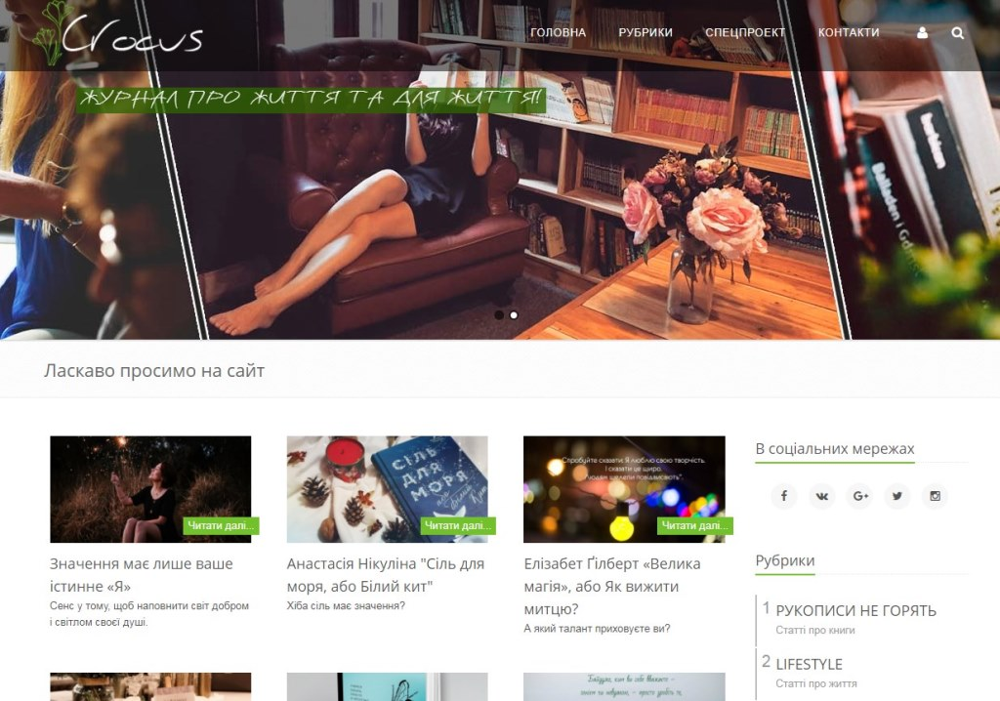
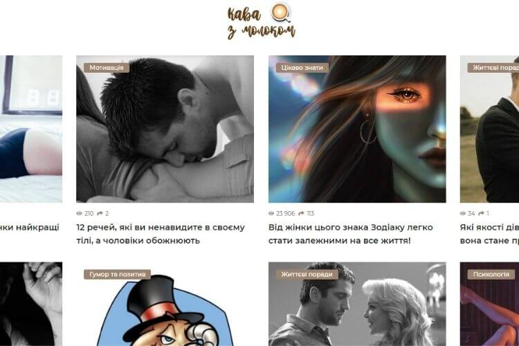

Україномовні сайти для жінок: 9 найкращих онлайн-ресурсів (оновлено)
Всесвітня інтернет-мережа – це таке місце, де знайдеться все! Кожного дня в ній з’являються все нові й нові сайти для жінок, які дають відповіді практично на будь-які запитання.
Величезна кількість різнопланової та часто неперевіреної інформації в мережі настільки заплутує користувачів, що відшукати щось насправді цінне й корисне буває непросто. А якщо ви маєте бажання читати саме українською, то завдання ускладнюється ще більше! Але не все так погано – україномовний сегмент інтернету існує й розвивається, і підтвердженням тому є наша добірка якісних та інформативних жіночих сайтів на українській мові.
Зміст:
1. Твій Світ
Так, онлайн-журнал для жінок «Твій світ» – це ми! Вже більше трьох років ретельно добираємо для вас найцікавіші теми та пишемо матеріали, які будуть справді корисними. Здоров’я і краса, сім’я та виховання дітей, натхнення та мотивація, рецепти смачних страв, добірки цитат і привітань на всі випадки життя – і цим наш перелік тем далеко не вичерпується! Сподіваємося, що наш сайт увійде до вашого особистого переліку улюблених українських веб-видань.
2. Українки
Онлайн-журнал ukrainky.com – яскравий й небанальний сайт про українок і про все українське. Як пишуть його засновниці, видання без зайвого пафосу висвітлює турботи, здобутки та події в житті наших жінок. А вони варті уваги не менше, ніж закордонні!
3. Тутка
Ще один україномовний сайт, вартий вашої уваги – tutkatamka.com.ua. Інтригує сама тільки назва, правда? Насправді тут є дуже багато порад, лайфхаків і просто цікавинок на різні теми, які турбують українців. А ще все це подається з гарним почуттям гумору. Як-то кажуть, все буде ТУТКА!
4. Crocus
Наступний цікавий сайт, де пишуть українською, має назву Crocus. Як вказано на головній сторінці – «журнал про життя та для життя», і це дійсно так! Тут знайдуться статті про книги і про психологічне здоров’я; про відомих людей і про цікаві місця, філософські роздуми на різні теми і ще багато чого не менш захоплюючого. Особливість сайту – спецпроект «Врятувати життя», де публікуються історії про людей, потребуючих допомоги.
5. Кава з молоком
Цікаві й надихаючі статті на теми психології та стосунків, трішки гумору і поради на всі випадки життя: на сайті coffeewithmilk.com.ua знайдеться все!
Звичайно, це ще далеко не всі якісні україномовні сайти для жінок які можна знайти на просторах інтернету. Якщо знаєте подібні онлайн-видання – діліться посиланнями в коментарях! Цікавого вам інтернет-серфінгу!